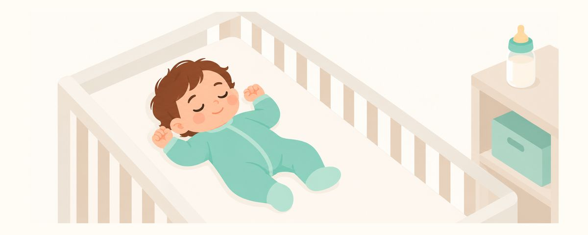

Nicht mit der Flasche einschlafen: So beugen Sie Nuckelflaschenkaries vor
Schläft Ihr Baby mit der Flasche ein, bleibt Milch an den Zähnen und Karies beginnt oben vorne. Wie sie entsteht, der Ablauf „trinken, putzen, schlafen“ und erste Warnzeichen.
Auf einen Blick
- Ihr Baby nicht mit der Flasche ins Bett legen
- Nach nächtlichen Mahlzeiten immer die Zähne reinigen
- Ein weißer Streifen oder brauner Fleck vorn? Zum Zahnarzt
Schläft Ihr Baby mit der Flasche im Mund schnell ein, ist es nicht leicht, diese Gewohnheit zu ändern. Kommen aber die ersten Zähne, ist es Zeit, die Mahlzeiten vor dem Schlafen einmal anzuschauen. Hier lesen Sie, wie Nuckelflaschenkaries entsteht und wie Sie ihr vorbeugen.
Im Schlaf bleibt Milch an den Zähnen
Auch Kuhmilch, Säuglingsnahrung und Muttermilch enthalten Zucker. Im Wachzustand fließt ständig Speichel und spült den Mund, doch im Schlaf fließt weniger Speichel. Schläft Ihr Baby mit der Flasche ein, bleiben Milch oder Säuglingsnahrung lange an den Zähnen. Die Bakterien im Mund bilden aus diesem Zucker Säure, die die Zähne angreift.
Karies, die durch das Einschlafen mit der Flasche oder beim Trinken entsteht, nennt man oft Nuckelflaschenkaries (frühkindliche Karies). Sie beginnt an der Rückseite der oberen Schneidezähne und nahe am Zahnfleischrand und breitet sich schnell aus. Von vorn ist sie schwer zu sehen und wird daher oft spät entdeckt. Beim Saugen an der Flasche deckt die Zunge die unteren Schneidezähne ab, die oberen aber liegen direkt in der stehenden Milch. Deshalb beginnt sie meist oben.
Zuerst wird die Stelle nahe am Zahnfleisch an den oberen Schneidezähnen kreidig weiß und matt. In diesem Stadium ist noch kein Loch entstanden, und Fluorid kann das Fortschreiten stoppen. Bleibt es unbehandelt, verfärbt sich die Stelle braun und der Zahn beginnt zu zerbröckeln.
Stillen an sich wird empfohlen. Sind aber Zähne da, kann Stillen nach Bedarf die ganze Nacht hindurch ein Kariesrisiko sein. Das heißt nicht, dass Sie abstillen sollen, sondern dass das Reinigen nach dem Trinken zur Gewohnheit werden sollte.
Trinken, putzen und dann schlafen
Legen Sie den Ablauf vor dem Schlafen als „trinken → putzen → schlafen“ fest.
- Geben Sie die Flasche nur zu den Mahlzeiten und lassen Sie Ihr Baby nicht damit einschlafen.
- In die Flasche kommen nur Muttermilch, Säuglingsnahrung oder Wasser, kein Saft und keine süßen Getränke. Gewöhnt sich Ihr Baby daran, nur mit Flasche einzuschlafen, wird der spätere Umstieg auf den Becher schwer, selbst wenn nur Wasser darin ist.
- Nach dem Trinken putzen Sie die Zähne mit Gaze oder Zahnbürste. Sind schon Zähne da, nehmen Sie Fluorid-Zahnpasta in Reiskorngröße.
- Nach dem Putzen helfen Sie Ihrem Baby ohne Essen in den Schlaf, etwa durch Halten, ein Schlaflied oder sanftes Klopfen.
- Ab etwa dem ersten Geburtstag reduzieren Sie die nächtlichen Mahlzeiten nach und nach.
Nächtliche Mahlzeiten schrittweise zu verringern ist für Baby und Eltern angenehmer, als sie auf einmal zu streichen. Versuchen Sie, Ihr Baby beim Aufwachen erst durch Klopfen wieder in den Schlaf zu begleiten, statt sofort zu füttern, und verringern Sie langsam die Trinkmenge oder die Zahl der Mahlzeiten. Isst Ihr Baby tagsüber genug, verlangt es nachts seltener danach.
Ist Ihr Baby beim Trinken eingeschlafen, ziehen Sie den Sauger oder die Brustwarze behutsam heraus und wischen Sie die Zähne vorsichtig mit sauberer Gaze ab. Auch wenn es nicht perfekt gelingt, hilft es schon, die Milch von der Zahnoberfläche zu entfernen.
Heben Sie ab und zu die Oberlippe leicht an und schauen Sie sich die Rückseite der oberen Schneidezähne und den Bereich am Zahnfleisch an. So entdecken Sie früh Veränderungen, die von vorn nicht zu sehen sind.
Häufige Fragen
Verursacht auch Muttermilch Karies?
Stillen wird für Babys empfohlen. Sind aber Zähne da und wird nachts häufig gestillt, ohne danach zu reinigen, kann das Kariesrisiko steigen. Reinigen Sie die Zähne nach dem Stillen mit.
Ist alles gut, wenn die Flasche abgewöhnt ist?
Das Abgewöhnen der Flasche hilft sehr. Trägt Ihr Kind aber einen Becher mit süßen Getränken herum und trinkt oft daraus, kann ebenfalls Karies entstehen. Achten Sie auch darauf, was und wie oft Ihr Kind trinkt.
Muss ich mein schlafendes Baby zum Putzen wecken?
Sie müssen es nicht extra wecken. Die Schneidezähne im Schlaf sanft mit Gaze abzuwischen, hilft schon viel.
Wie lange darf ich nachts noch füttern?
Das ist bei jedem Baby verschieden, ein festes Datum gibt es nicht. Empfohlen wird, ab etwa dem ersten Geburtstag nach und nach zu reduzieren. Solange Sie nachts füttern, reinigen Sie die Zähne danach unbedingt.
Ich sehe einen weißen Streifen. Lässt sich das rückgängig machen?
Beginnende Karies, bei der noch kein Loch entstanden ist, lässt sich mit Fluorid stoppen. Je früher sie entdeckt wird, desto einfacher ist die Behandlung. Lassen Sie es gleich in der Zahnarztpraxis ansehen.
Wann Sie gleich zum Zahnarzt gehen sollten
- An den oberen Schneidezähnen ist der Bereich am Zahnfleisch weiß und matt geworden
- Auf den Schneidezähnen sind braune oder schwarze Flecken zu sehen
- Die Rückseite der Schneidezähne ist gelblich verfärbt oder wirkt rau
- Ein Zahn sieht abgebrochen oder zerbröckelt aus
- Ihr Kind scheint bei Kaltem oder Süßem Schmerzen zu haben
Zur richtigen Zeit erinnert werden
Geben Sie in der App Zahnkalender das Geburtsdatum Ihres Kindes (oder den Geburtstermin) ein, und diese Artikel erreichen Sie als Erinnerung genau dann, wenn sie wichtig sind. Kostenlos, ohne Anmeldung.
Quellen
Die Informationen in dieser App dienen der allgemeinen Aufklärung und ersetzen keine professionelle zahnärztliche Betreuung. Bitte sprechen Sie mit einer Zahnärztin oder einem Zahnarzt über die Situation Ihres Kindes.